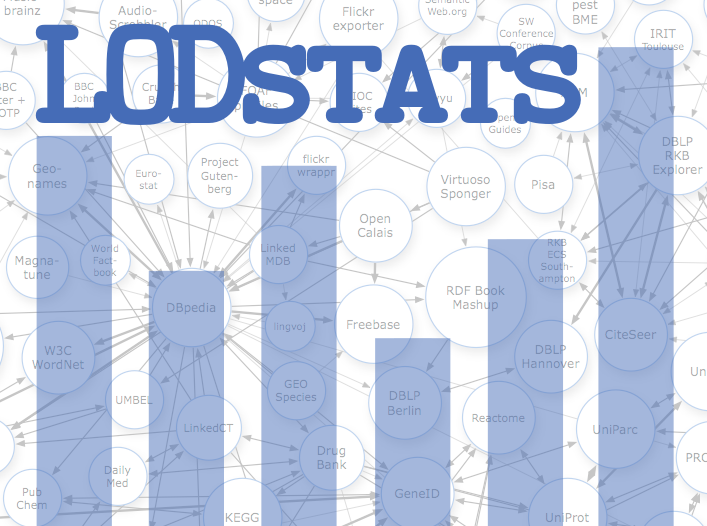

BIS PhD Seminar
Processing and Evaluating
Large Amounts of Open Data
Created by Ivan Ermilov 3rd March 2014
Retrospective
- Last PhD Seminar - 3rd December 2012
- AKSW Colloquium
- I am a part of AKSW/BIS group - since September 2011
- What's the progress so far?
My Progress
- Projects
- Publications
- Other Activities
Projects
- SlideWiki
- CubeViz
- LODStats (current)
- CSV2RDF Mass Conversion Framework (current)
Publications
- SlideWiki: Elicitation and Sharing of Corporate Knowledge using Presentations by Ali Khalili, Sören Auer, Darya Tarasowa, and Ivan Ermilov in Proceedings of the EKAW 2012
- Towards an Open-Governmental Data Web by Ivan Ermilov, Claus Stadler, Michael Martin, and Sören Auer in Proceedings of the KESW2012
- Linked Open Data Statistics: Collection and Exploitation by Ivan Ermilov, Michael Martin, Jens Lehmann, and Sören Auer in Proceedings of the 4th Conference on Knowledge Engineering and Semantic Web
- CSV2RDF: User-Driven CSV to RDF Mass Conversion Framework by Ivan Ermilov, Sören Auer, and Claus Stadler in Proceedings of the ISEM '13, September 04 - 06 2013, Graz, Austria
Other Activities
Participated in the Semantic Web Challenge 2013 with the CSV2RDF project.
Planned and pending publications
- A Fine-Grained Evaluation of SPARQL Endpoint Federation Systems by Muhammad Saleem, Yasar Khan, Ali Hasnain, Ivan Ermilov, Axel-Cyrille Ngonga Ngomo (submitted to Semantic Web Journal)
- CubeViz journal publication (Michael Martin)
- LODStats journal publication
Work in progress
LODStats project: a statement-stream-based approach for gathering comprehensive statistics about RDF datasets.
CSV2RDF project: user-driven semantic mapping of tabular data.
LODStats
- Evaluate RDF datasets triple by triple
- Gathers 32 stat. criteria such as:
- Number of triples, entities, literals
- Average string length
- Vocabularties, classes used
- Helps to understand the data
- Generates VoID desctiptions
LODStats Architecture
LODStats Features
- Report of warnings and errors for datasets
- Report on statistical criteria for datasets
- Export as VoID/DataCube metadata
- General LOD cloud statistics
- Search function fro datasets, vocabularies, classes, properties, languages, datatypes
- REST interface for the search functions
- Linked Data publication of statistics
- SPARQL endpoint
- CubeViz installation for the statistics visualization
LODStats Hidden Features
- Which visualization is suitable for my dataset?
- RDF DataCube Vocabulary/Ontology used?
- Contains geospatial information?
- What is the class hierarchy depth?
- Does dataset fit into the specific application?
- Linked to DBPedia?
- Largest known dataset in the domain?
LODStats: Future Steps
- Parallel processing
- Inside the dataset
- Distributing datasets across the cluster
- LinDA project (visualization framework)
CSV2RDF Mass Conversion Framework
377 data catalogs are available with a large amount of tabular data. How to deal with that data? (Only 3% are available as RDF)
Results so far
- CSV resources converted: 15627
- CSV resources volume: 62 GB
- Number of generated triples: 7.3 B
Architecture
Generated Mappings
User Interface
Open Questions
- Schema/ontology matching
- Classification of the tables
- Instance matching
- Interface to combine these three steps